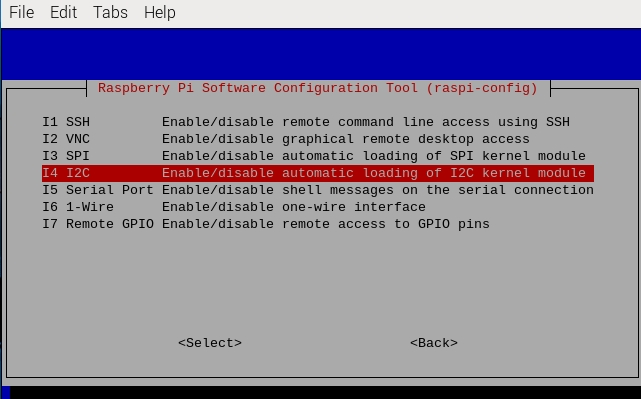

Nota
Ciao, benvenuto nella comunità SunFounder Raspberry Pi & Arduino & ESP32 su Facebook! Approfondisci Raspberry Pi, Arduino ed ESP32 con altri appassionati.
Perché unirsi?
Supporto esperto: Risolvi i problemi post-vendita e le sfide tecniche con l’aiuto della nostra comunità e del nostro team.
Impara e condividi: Scambia consigli e tutorial per migliorare le tue competenze.
Anteprime esclusive: Accedi in anticipo agli annunci di nuovi prodotti e anteprime.
Sconti speciali: Goditi sconti esclusivi sui nostri prodotti più recenti.
Promozioni festive e omaggi: Partecipa a promozioni festive e omaggi.
👉 Sei pronto a esplorare e creare con noi? Clicca su [Qui] e unisciti oggi stesso!
Configurazione I2C
Passaggio 1: Abilita la porta I2C del tuo Raspberry Pi (se l’hai già abilitata, salta questo passaggio; se non sai se l’hai fatto o meno, continua a seguire le istruzioni).
sudo raspi-config
3 Opzioni di Interfaccia

I4 I2C
<Sì>, poi <Ok> -> <Finish>

Passaggio 2: Controlla se i moduli I2C sono caricati e attivi.
lsmod | grep i2c
Dovrebbero apparire i seguenti codici (il numero può variare); se non compaiono, riavvia il Raspberry Pi con sudo reboot.
i2c_dev 6276 0
i2c_bcm2708 4121 0
Passaggio 3: Installa i2c-tools.
sudo apt-get install i2c-tools
Passaggio 4: Controlla l’indirizzo del dispositivo I2C.
i2cdetect -y 1 # Per Raspberry Pi 2 e versioni successive
i2cdetect -y 0 # Per Raspberry Pi 1
pi@raspberrypi ~ $ i2cdetect -y 1
0 1 2 3 4 5 6 7 8 9 a b c d e f
00: -- -- -- -- -- -- -- -- -- -- -- -- --
10: -- -- -- -- -- -- -- -- -- -- -- -- -- -- -- --
20: -- -- -- -- -- -- -- -- -- -- -- -- -- -- -- --
30: -- -- -- -- -- -- -- -- -- -- -- -- -- -- -- --
40: -- -- -- -- -- -- -- -- 48 -- -- -- -- -- -- --
50: -- -- -- -- -- -- -- -- -- -- -- -- -- -- -- --
60: -- -- -- -- -- -- -- -- -- -- -- -- -- -- -- --
70: -- -- -- -- -- -- -- --
Se è connesso un dispositivo I2C, verrà visualizzato l’indirizzo del dispositivo.
Passaggio 5:
Per gli utenti di linguaggio C: Installa libi2c-dev.
sudo apt-get install libi2c-dev
Per gli utenti Python:
Attivare l’ambiente virtuale.
Nota
Prima di attivarlo, devi assicurarti di aver creato un ambiente virtuale, fai riferimento a: Creazione di un Ambiente Virtuale.
Ogni volta che riavvii il Raspberry Pi o apri un nuovo terminale, dovrai eseguire nuovamente il seguente comando per attivare l’ambiente virtuale.
source myenv/bin/activate
Una volta attivato l’ambiente virtuale, vedrai il nome dell’ambiente prima del prompt della riga di comando, indicando che stai lavorando all’interno dell’ambiente virtuale.
Installa smbus per I2C.
sudo pip3 install smbus2
Uscire dall’ambiente virtuale.
Quando hai finito il lavoro e desideri uscire dall’ambiente virtuale, esegui semplicemente:
deactivate
Questo ti riporterà all’ambiente Python globale del sistema.